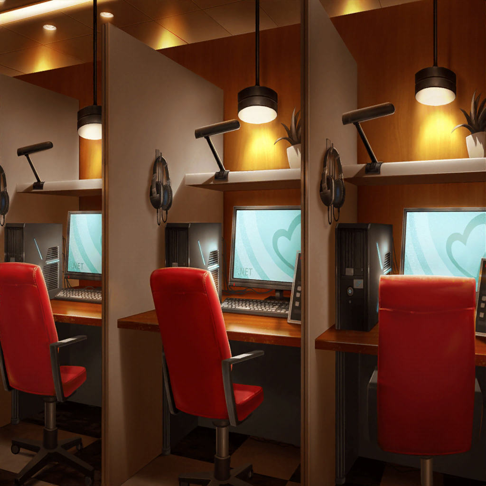

CiRCLE カフェテリア
リサ
お待たせー！
次のスタジオ練の予約取れたよー
燐子
いつも……ありがとうございます……
リサ
いいっていいって、もう慣れっこだしさ☆
紗夜
……あの、宇田川さん
あこ
へ？ なんですか？
紗夜
いえ、今日はずっとドラムが走り気味でしたね
あこ
あ……
リサ
あこー？
何か悩み事があるなら言いなよ〜？
あこ
ほんと！？
リサ
ほんとほんと、ね、友希那？
友希那
……ええ、あこの調子が悪いとバンド全体に影響する。
問題があるなら、早く解決したほうがいいわ
あこ
じゃ、じゃあ……
あこのお願い聞いてもらってもいいですか……？
友希那
お願い……？
なにかしら……
あこ
あこと一緒に、NFOしてください！
紗夜
NFO……？
燐子
……Neo Fantasy Onlineっていう……わたしと……
あこちゃんがやっているオンラインゲームです
あこ
実は今、NFOで友達紹介キャンペーンやってて、
新しく始めた人と一緒にクエストをクリアすると、
めっちゃカッコイイ武器がもらえるんです！
友希那
クエスト？ 武器？
あこが何を言っているのかよく分からないわ
リサ
えーっと、つまりアタシ達が一緒にゲームをすると
良いモノがもらえるってこと？
紗夜
……それと今日の演奏でドラムが走っていたことと、
なにか関係があるの？
あこ
あこ……ずっとその武器がほしくて……
気になっちゃって……そのー……
燐子
あこちゃん、だからソワソワしてたんだね……
あこ
うん……だから、お願いします！
友希那
断るわ
あこ
ええ！？
紗夜
私も湊さんと同意見です。
ゲームとバンドは何も関係がありませんし、
練習の時はそういうことを脇に置いて、演奏に集中すべきかと
あこ
そ、それは……そうなんですけど
リサ
いやーでも、気になることがあって、
いてもたってもいられないって気持ちはわかるよ。
だからアタシはやってもいいかなーって
あこ
リサ姉〜〜
リサ
友希那と紗夜は？ どうしてもダメ？
紗夜
……どうします、湊さん
燐子
クエストは……短いです。
時間はそんなにかからないと思います……
あこ
友希那さん……！
友希那
……わかったわ
あこ
ほ、ほんと！？ やったー！
燐子
良かったね、あこちゃん……
友希那
ただし、終わったらバンドの練習をすること
あこ
はーい！ それじゃあ早速明日、ネカフェにレッツゴー！
紗夜
……随分と簡単に了承しましたけど、
良かったんですか、湊さん
友希那
こういう時、反対するだけ時間の無駄だと最近わかってきたの。
……でも、これもバンドとして高みを目指すために
必要なことだと思って、本気でやるわよ

ネットカフェ
リサ
それで、あこ。アタシ達は何をすればいいの？
あこ
このブースに一人ずつ入って、同じ場所にログインして遊ぶ感じ！
ここのパソコンには、最初からNFOが入ってるから簡単だよ！
友希那
別々のパソコンで一緒に遊べるの？
燐子
オンラインで……同じ空間を冒険するんです
あこ
ゲームを立ち上げて……あ、職業はどうする？
紗夜
ゲームの中に職業があるんですか？
燐子
役割を……決めるんです。
わたしはウィザード、あこちゃんは……
ネクロマンサーなんですけど……
あこ
リサ姉はなんかヒーラーっぽいよね？
リサ
へ？ ヒーラー？ ……ってなに？
あこ
みんなを回復する人！
リサ
へー……アタシってそういうイメージなんだ。
オッケー！ じゃあ、それやってみる！
燐子
友希那さんは……なにかやってみたい職業……ありますか？
友希那
種類が多くてよくわからないわ……なにがいいかしら？
あこ
じゃあ友希那さんは……歌がうまいから吟遊詩人！
歌でみんなを元気づける職業でお願いします！
友希那
歌を歌う職業があるのね……わかった、それにするわ
紗夜
あとは私ですか。そうですね……この職業は難しいですか？
燐子
それはタンク、ですね……
大きな盾でモンスターの攻撃から……みんなを守る職業です。
……難しいですけど……最初のほうなら大丈夫だと……思います
紗夜
なるほど……ではこれをやってみます
友希那
その職業が気に入ったの？
紗夜
いえ……守りがしっかりしていて、安心できそうだったので
リサ
あっはは☆
紗夜らしいね〜
あこ
あとは……あ、名前はどーします？
ゲームだと、好きな名前をつけられるんですけど……
燐子
今回だけなら……みんな自分の名前でもいいんじゃないかな……
あこ
そっか！ じゃあそれでキャラ作っちゃうね
あこ
できた！ みんな準備はオッケーですか？
友希那
ええ
リサ
うーなんか緊張するねー！
燐子
皆さん……ゲームが始まったら……
最初の場所に……いてください
紗夜
わかりました
あこ
よーし！ じゃあ、NFOスタート！